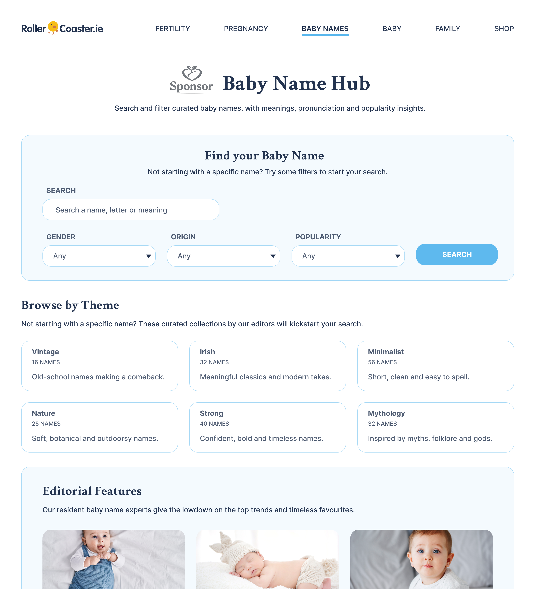
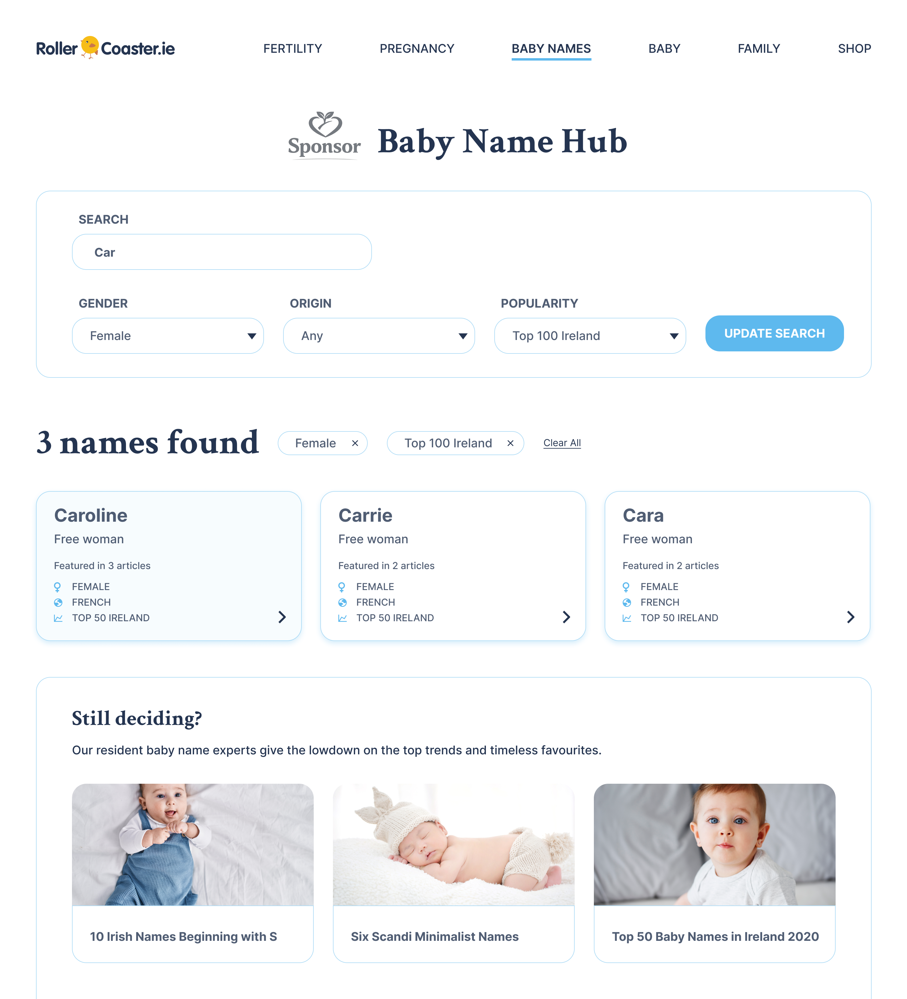
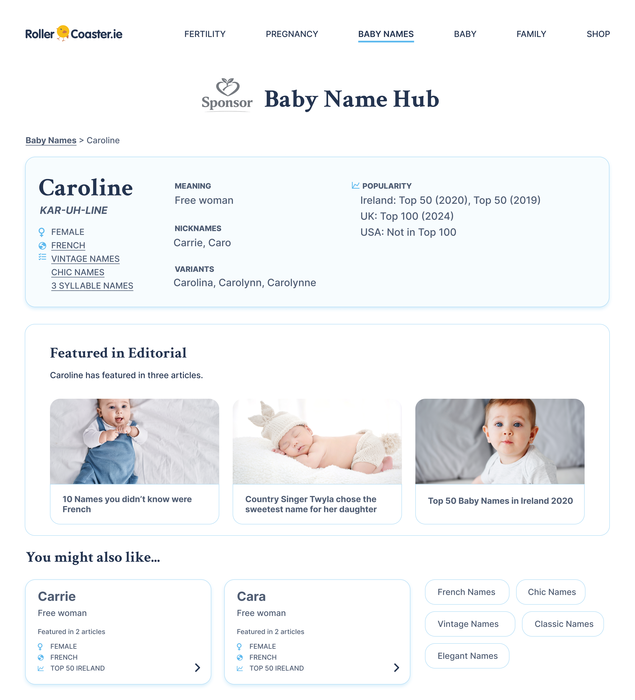

Rollercoaster.ie: Turning high-performing baby name editorial into a searchable product
Rollercoaster.ie already ranked strongly for baby name editorial, especially Irish name content. The
opportunity was to evolve that demand into a structured experience users could return to, while creating a
sponsor-ready surface for a high-value audience.
As Product & UX Designer, I designed the end-to-end baby name database experience, including the content
schema, search and filter templates, and the editorial linking loop. The work was scoped to a WordPress CMS
with a small engineering team.
Outcome target: increase repeat visits and pageviews per session by making baby name discovery searchable,
comparable and easy to act on.

Baby Name Hub homepage showing name search, filters and themes.
Product
Rollercoaster.ie (Baby Names)
User goal
Choose a baby name confidently
Business goal
Repeat visits, pageviews, sponsor-ready surface
Constraints
WordPress CMS, small engineering team, no existing name database
Context
Baby name content was already the strongest-performing topic on the site. Editorial drove high search
traffic, strong social click-through and repeat reading among pregnant users. But the experience was
unstructured: users could read listicles, but they could not reliably search, compare or narrow down names
based on what mattered to them.
Strong SEO footprint for long tail and Irish baby name queries
Clear sponsor demand for early-stage parenting audiences
What was missing
No structured name database or content model
No repeatable way to browse, filter or compare names
No product loop between editorial and name exploration
Opportunity framing
The opportunity was to convert one-off reading into an ongoing decision journey: a searchable baby name
product that could increase repeat visits, deepen session engagement and create a place for
sponsorship.
User need
Search and filter names by practical criteria, not just article theme
Compare options quickly and open details when something looks promising
Discover more context when a name appears in themed editorial
Business value
More pageviews per session through browsing results and individual name pages
More repeat visits over weeks as users shortlist names
A clear section sponsor proposition for pregnancy-stage advertisers
Product hypothesis
If we create a structured baby name system, users will return more often and consume more
pages per session, while sponsors gain a stable, high-intent audience.
Expected user outcomes
Easier shortlisting through search and filters
Confidence from meaning pages and editorial context
More intentional discovery beyond list articles
Expected business outcomes
More repeat sessions during the baby name journey
Higher pageviews per session via browsing loops
More sponsor value through a defined section
Designing the data model
The core challenge was structural. Existing editorial was free text and there was no database. To enable
search, filtering and consistent meaning pages, I defined a “Name” content type that could be created,
edited and published within the existing WordPress workflow.
Popularity: rank by year where available (Ireland, UK, US)
Themes: theme tags based on existing editorial groupings
Editorial links: curated links to relevant articles featuring the name
Design implication:
The name page could be a structured destination. That enabled filtering,
consistent layout and better internal linking.
Constraints and technical fit
Implemented as a WordPress custom post type (engineering familiarity)
Custom templates for search and results pages
Designed for editorial maintenance: fields were simple, consistent and easy to review
Future extensibility: themes could grow as trends emerged without restructuring the model
Why this mattered:
A strong schema made quality scalable, which is essential for trust, SEO and browsing.
Editorial articles (existing)
List posts, trends, “10 Irish names…”
New: linked Names (by ID)
↔
Name (Custom Post Type)
Structured entry powering search + name pages
Meaning, Origin, Pronunciation
Gender (Boy / Girl / Unisex)
Popularity rank by year (IE / UK / US — where available)
Themes (from editorial + future additions)
Linked editorial (IDs → “Featured in…”)
↔
Themes (taxonomy)
Irish, vintage, minimalist, nature…
Seeded from existing editorial themes
Search + filter template
WordPress search + custom results layout
Filters: gender, origin, popularity, themes
→
Name detail template
Metadata layout + “Featured in…” editorial links
Related names (origin, gender, theme etc.)
→
Tracking + growth signals
Top searches, filters used, outbound clicks
Used to shape new editorial + social topics
Name content schema and linking model.
Search and filter experience
We used WordPress search to reduce engineering overhead, and designed custom templates to make results
scannable and decision-oriented. Filters were built to reflect how users browse names: by theme, origin,
popularity and gender.
Search entry points
Simple search for quick lookups
Filter-first browsing for exploration
Clear results layout that supports fast scanning
Design choice:
Optimise for “find a shortlist quickly” rather than “read everything”.
Filter set
Theme filters seeded from existing editorial themes
Origin and gender as core constraints
Popularity where rank data existed (IE/UK/US)
Design choice:
Start with filters we could support with confidence, then expand as new trends emerged.

Search results page showing filters and scannable name cards.

Name page with meaning, pronunciation, origin and links.
Editorial and database loop
The standout value was linking existing editorial demand into a structured browsing loop. Names surfaced
inside relevant articles linked through to the name pages. Name pages pointed back to multiple editorial
features. This kept users moving between inspiration and decision, increasing depth without relying on
endless new content.
From editorial to names
Editorial articles could link directly to name pages for names mentioned
Editorial could link to theme pages in the name directory for “show me names like this” navigation
Reduced dead-ends where users finished an article and left
From name pages back to editorial
Name pages surfaced the most relevant editorial features first
If no editorial match existed, show culturally similar names (same origin + gender)
Improved internal linking and SEO depth through structured navigation
Tracking and growth strategy
The product was designed to generate signals the editorial team could use to make smarter content choices
and identify emerging name trends.
Top search queries (to identify rising names and gaps)
Outbound paths from editorial to names and themes to indicate trends
How it fed growth
Create editorial from real search demand, not just hunches
Use trend signals for social and podcast topics
Strengthen SEO coverage by expanding structured name pages
Monetisation
Baby naming attracts a high-intent, early-stage parenting audience. Sponsors value this stage because
parents often form loyal, long-term brand preferences early. The product supported both title sponsorship
and banner placements.
Sponsor integration
Section title sponsorship (e.g. “The ___ Baby Name Hub”)
Banner placements on results and name pages
Consistent sponsor exposure across high-intent browsing
Repeat visits and deeper sessions through browsing loops
Reflection
Building a structured product inside a CMS is a systems design problem. The UI is only as good as the
schema, the editorial workflow and the linking rules behind it. This project reinforced the value of
designing for maintainability and growth, not just launch.
What I learned
Content modelling is a core product skill, especially in editorial businesses
Search and filters are only as useful as the quality and consistency of structured data
Retention loops can come from linking strategy, not just feature complexity
What I would do next
Launch phase 2: favourites and shortlists with return prompts
Add AI helpers to help users find their ideal names
Refine theme taxonomy based on actual filter usage and search demand